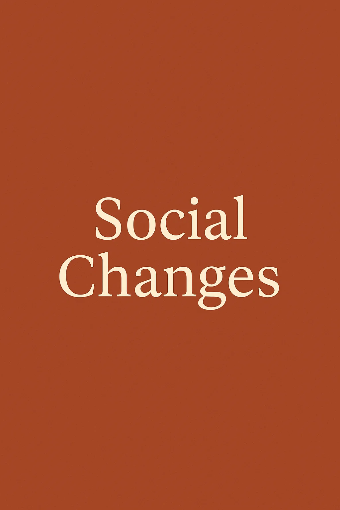

A personal audio essay on how social values in Bangladesh have transformed over the last decade — recorded, edited, and produced by me.

From how families make decisions to how technology reshapes friendship, faith, and ambition — a reflection on a country changing faster than any generation before it. In English.
🎙️ Produced with Adobe Podcast AI enhancement
Bangladesh's last decade has been a story of quiet revolutions: smartphones reaching villages before paved roads, daughters becoming first-generation university graduates, and a generation negotiating between tradition and a hyperconnected world. This episode is my attempt to make sense of those shifts — as someone who grew up inside them.